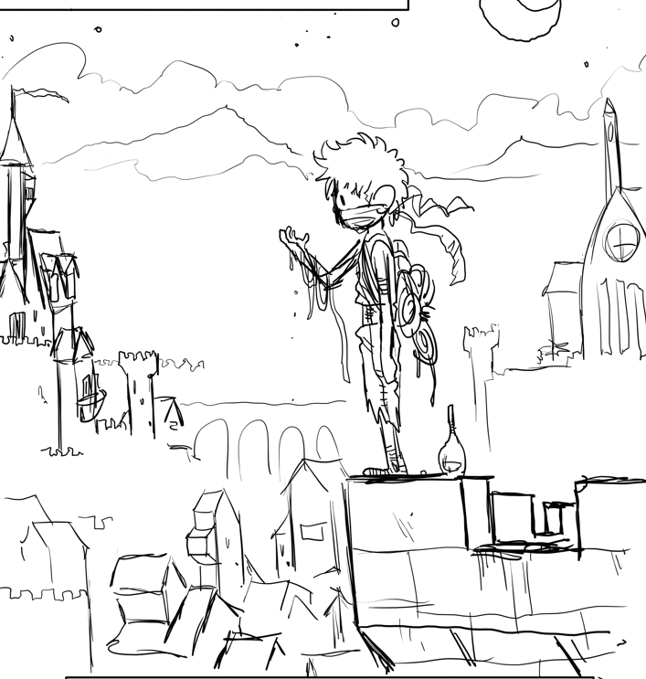

<!DOCTYPE html>
<html style="height:100%">
<head>
<title> The Big Green</title>

<meta name = "viewport" content="width=device-width, initial-scale =1.0">

<link rel="stylesheet" href = "leaflet.css">

<script src="leaflet.js">

	
</script>
<style>
	#map{height:180px;}
</style>

</head>
<body style = "height: 100%; margin:0;">

	
	<!--<div id ="map" style = " width:100%; height:100%; background:#bfaf94; margin:0;">-->
	<div id ="map" style = " width:100%; height:100%; background-color: #f8ead0; background-image: url('clouds2.png') ;background-position: center;
	background-size: center; margin:0;">
	

	<script  type = "text/javascript">
		
		//icons 
		
		var iconCap = L.icon({
			iconUrl: 'images/Capital_icon.png',
    	iconSize: [40, 40],
    	iconAnchor: [20, 20],
    	popupAnchor: [0, -30],
		})

		var RuinedCap = L.icon({
			iconUrl: 'images/Ruined_Capital_Icon.png',
    	iconSize: [40, 40],
    	iconAnchor: [20, 20],
    	popupAnchor: [0, -30],

		})

		var MajCity = L.icon({
			iconUrl: 'images/major_City_icon.png',
    	iconSize: [40, 40],
    	iconAnchor: [20, 20],
    	popupAnchor: [0, -30],
    	
		})
		var RuinedCity = L.icon({
			iconUrl: 'images/destroyed_major_City_icon.png',
    	iconSize: [40, 40],
    	iconAnchor: [20, 20],
    	popupAnchor: [0, -30],
		})

		var mapSW = [-1400 , 4000],
			mapNE = [3500,-400];

		

		//map object
		const map = L.map('map').setView([20,0],2);
		
		//reference and tiles
		L.tileLayer('{z}/{x}/{y}.png',{
			minZoom:1,
			 maxZoom :3 
			 ,continuousWorld: false,
			  noWrap:true, 
				crs: L.CRS.Simple,
				
			}).addTo(map);
		
		//map.setMaxBounds(new L.LatLngBounds(
		//	map.unproject(mapSW,map.getMaxZoom()),
		//	map.unproject(mapNE,map.getMaxZoom())) );

		//map.setMaxBounds(map.getBounds())

		//var marker1 = L.marker([0,0]).addTo(map); //0,0 marker
		//marker1.bindPopup('<b>center </b>');

		//ACTIVE CAPITALS -------------------
		var Dallas = L.marker([79.5,-48], {icon: iconCap}).addTo(map);
		Dallas.bindPopup(' <br> <h2>Dallas </h2>  <p> wood worms and such ya knnow when the worms they are in the woods</p>');
		
		var Clearwater = L.marker([10,-12], {icon: iconCap}).addTo(map);
		Clearwater.bindPopup(' <br> <h2>Clearwater </h2>  <p> wood worms and such ya knnow when the worms they are in the woods</p>');
		
		var Everglade = L.marker([-70,37], {icon: iconCap}).addTo(map);
		Everglade.bindPopup(' <br> <h2>Everglade </h2>  <p> wood worms and such ya knnow when the worms they are in the woods</p>');
		
		var Honeyside = L.marker([0,-80], {icon: iconCap}).addTo(map);
		Honeyside.bindPopup(' <br> <h2>Honeyside </h2>  <p> wood worms and such ya knnow when the worms they are in the woods</p>');	
		
		var LosAngels = L.marker([72.5,37], {icon: iconCap}).addTo(map);
		LosAngels.bindPopup(' <br> <h2>Los Angels </h2>  <p> wood worms and such ya knnow when the worms they are in the woods</p>');
		
		var Starbor = L.marker([-42,52], {icon: iconCap}).addTo(map);
		Starbor.bindPopup(' <br> <h2>Starbor </h2>  <p> wood worms and such ya knnow when the worms they are in the woods</p>');
		
		var Stonewall = L.marker([50,-18], {icon: iconCap}).addTo(map);
		Stonewall.bindPopup(' <br> <h2>Stonewall </h2>  <p> wood worms and such ya knnow when the worms they are in the woods</p>');
		
		var Wormwood = L.marker([-16,83], {icon: iconCap}).addTo(map);
		Wormwood.bindPopup(' <br> <h2>Wormwood </h2>  <p> wood worms and such ya knnow when the worms they are in the woods</p>');

			
		//RUINED CAPITALS
		var Doblin = L.marker([68,-73], {icon: RuinedCap}).addTo(map);
		Doblin.bindPopup(' <br> <h2>Doblin</h2>  <p> wood worms and such ya knnow when the worms they are in the woods</p>');
		
		var Holt = L.marker([20,53], {icon: RuinedCap}).addTo(map);
		Holt.bindPopup(' <br> <h2>Holt</h2>  <p> wood worms and such ya knnow when the worms they are in the woods</p>');
		
		var RatCity = L.marker([61,-32], {icon: RuinedCap}).addTo(map);
		RatCity.bindPopup(' <br> <h2>Rat City</h2>  <p> wood worms and such ya knnow when the worms they are in the woods</p>');
		
		//MINOR CITIES
		var biglittlehorn = L.marker([37,-66], {icon: MajCity}).addTo(map);
		var bloodstonefortress = L.marker([69.5,68], {icon: MajCity}).addTo(map);
		var brack = L.marker([-58,29], {icon: MajCity}).addTo(map);
		var bullfrogbottom = L.marker([-71,18], {icon: MajCity}).addTo(map);
		var clearwaycanal = L.marker([25,6], {icon: MajCity}).addTo(map);
		var crystallake = L.marker([52,-46], {icon: MajCity}).addTo(map);
		var dewdrop = L.marker([-52,13], {icon: MajCity}).addTo(map);
		var dredge = L.marker([-55,-28], {icon: MajCity}).addTo(map);
		var drift = L.marker([-30,67], {icon: MajCity}).addTo(map);
		var droom = L.marker([-62.5,-7], {icon: MajCity}).addTo(map);
		var eberhartfalls = L.marker([10,70], {icon: MajCity}).addTo(map);
		var fernway = L.marker([27,37], {icon: MajCity}).addTo(map);
		var gravygulch = L.marker([-9,7], {icon: MajCity}).addTo(map);
		var muck = L.marker([-43,9], {icon: MajCity}).addTo(map);
		var picklepass = L.marker([-24,-5], {icon: MajCity}).addTo(map);
		var quickville = L.marker([-18,33], {icon: MajCity}).addTo(map);
		var ravenrock = L.marker([29,-80], {icon: MajCity}).addTo(map);
		var redmountain = L.marker([42,-20], {icon: MajCity}).addTo(map);
		var riverend = L.marker([-16,54], {icon: MajCity}).addTo(map);
		var saltwater = L.marker([-2,89], {icon: MajCity}).addTo(map);
		var shelbysrest = L.marker([21,-20], {icon: MajCity}).addTo(map);
		var squelton = L.marker([-12,-39], {icon: MajCity}).addTo(map);
		var stillcrest = L.marker([-52.5,-45.5], {icon: MajCity}).addTo(map);
		var wook = L.marker([19,-57], {icon: MajCity}).addTo(map);
		
		//ruined cities
		var crag = L.marker([54,9], {icon: RuinedCity}).addTo(map);
		var flotsam = L.marker([38,80], {icon: RuinedCity}).addTo(map);
		var ebenwood = L.marker([35,52], {icon: RuinedCity}).addTo(map);
		var ashland = L.marker([51,66], {icon: RuinedCity}).addTo(map);
		var mimmek = L.marker([58,40], {icon: RuinedCity}).addTo(map);
		var deltaport = L.marker([67,0], {icon: RuinedCity}).addTo(map);
		var murloch = L.marker([68.5,-28], {icon: RuinedCity}).addTo(map);
		var foghorn = L.marker([54,-88], {icon: RuinedCity}).addTo(map);
		var brightburn = L.marker([73,5], {icon: RuinedCity}).addTo(map);
		var tremblefalls = L.marker([74,-41], {icon: RuinedCity}).addTo(map);


		
	</script>
</body>

</html>
